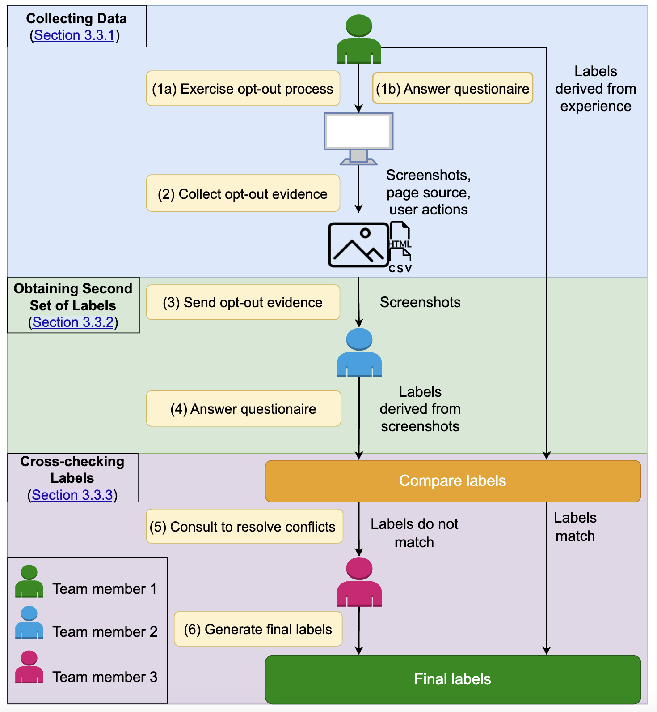
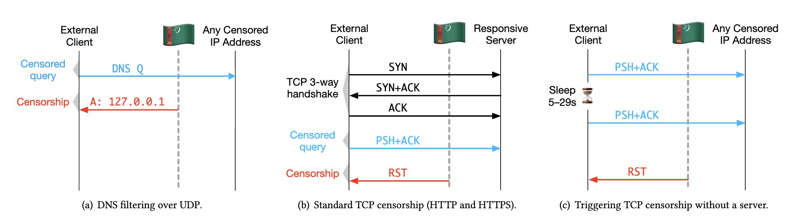

Van Hong Tran
tranv@uchicago.edu
Room 269, John Crerar Library, University of Chicago, Chicago, IL
Google Scholar /
Github /
Linkedin
Biography
Welcome! I’m Van Tran, a passionate 4th-year Ph.D. candidate at the University of Chicago, where I have the privilege of working under the guidance of Prof. Nick Feamster.
I completed my Master of Science degree as part of my Ph.D. studies at UChicago in 2023 and hold a Bachelor’s degree in Computer Science from Colgate University in Hamilton, New York.
During my undergrad, I also worked as a research assistant at Colgate University, where I focused on using machine learning to detect and explain the causes of epidemiological diseases, including anemia and H. pylori. I also gained industry experience through an internship at FPT Software.
Research Interest
My research is driven by a mission to enhance online safety and privacy for internet users globally using ML/AI. I focus on application of machine learning for internet privacy, cybersecurity, and privacy law, including:
- Large-scale, automated analysis of websites’ compliance with the California Consumer Privacy Act (CCPA), including dark pattern detection.
- Detection of censorship on a large scale through machine learning.
- Efficient, privacy-preserving data acquisition from private data owners.
- Detection and generation of enterprise phishing emails using large language models (LLMs).
|

|

|
Measuring Compliance with the California Consumer Privacy Act Over Space and Time.
Van Hong Tran, Aarushi Mehrotra, Marshini Chetty, Nick Feamster, Jens Frankenreiter, Lior Strahilevitz
Proceedings of the CHI Conference on Human Factors in Computing Systems, 2024
[PDF]
|
|
|
Augmenting Rule-based DNS Censorship Detection at Scale with Machine Learning.
Van Tran*,Vinod Yegneswaran Jacob Alexander Markson Brown*, Xi Jiang*, Arjun Nitin Bhagoji, Nguyen Phong Hoang, Nick Feamster, Prateek Mittal
29th ACM SIGKDD Conference on Knowledge Discovery & Data Mining (KDD), 2023
[PDF]
|
|

|
Dark Patterns in the Opt-Out Process and Compliance with the California Consumer Privacy Act (CCPA).
Van Hong Tran, Aarushi Mehrotra, Ranya Sharma, Marshini Chetty, Nick Feamster, Jens Frankenreiter, Lior Strahilevitz
[PDF]
|
|
|
MYCROFT: Towards Effective and Efficient External Data Augmentation.
Van Tran *, Zain Sarwar*, Arjun Nitin Bhagoji, Nick Feamster, Ben Y Zhao, Supriyo Chakraborty
[PDF]
|
|

|
Measuring and evading turkmenistan’s internet censorship: A case study in large-scale measurements of a low-penetration country
Sadia Nourin, Van Tran, Xi Jiang, Kevin Bock, Nick Feamster, Nguyen Phong Hoang, Dave Levin
Proceedings of the ACM Web Conference 2023
[PDF]
|
Professional Service
Reviewer
- International Conference on Learning Representations (ICLR) 2025
- Computer Human Interaction (CHI) 2025
Teaching Assistant
- Creative Coding, University of Chicago
- System Programming I, University of Chicago
- Introduction of Computing, I & II, Colgate University
- Computer Organization, Colgate University
|
Awards and Achievements
- Crerar Fellowship, University of Chicago, IL 2021
- Contextual Integrity (CI) Travel Grant, ($1,500), PrivaCI, 2023
- The Award for Excellence in Computer Science, Colgate University, 2021,
Awarded to top 5 Computer Science seniors recognized for excellent performance in academics and research
- Charles A. Dana Scholar, Colgate University, 2020,
Awarded to top 20 students with excellent performance in academics (GPA≥ 4.0).
- Leadership Excellence Award, Colgate University, NY
|
What's New?
- Our paper MYCROFT: Towards Effective and Efficient External Data Augmentation has been accepted by Workshop on ML for Systems at NeurIPS, 2025.
- [Oct 24, 2024] Honored to present my ongoing work about Automatic detection of dark patterns in CCPA opt-out process at PLSC 2025!
- Excited to become a first time reviewer of CHI 2025!
- Excited to become a first time reviewer of ICLR 2025!
|
|